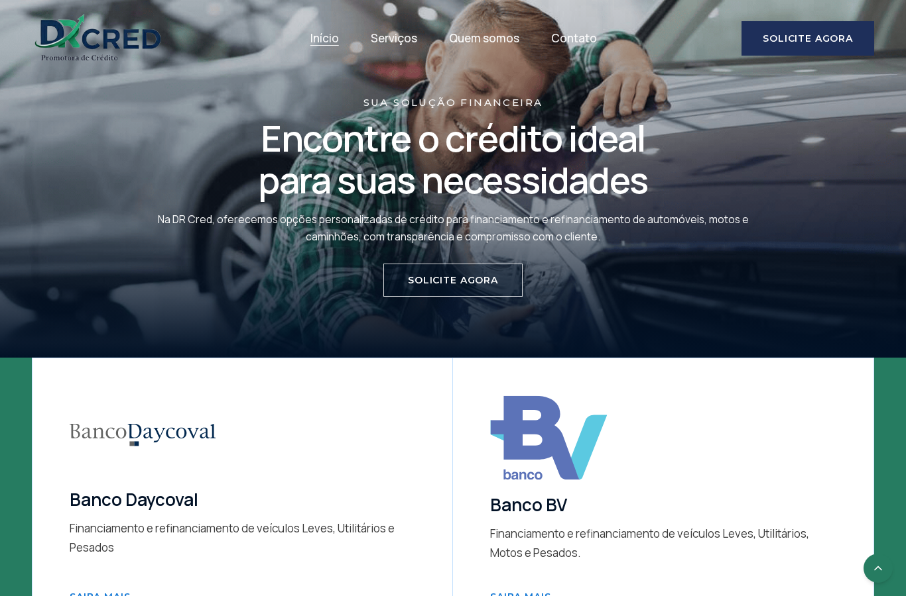
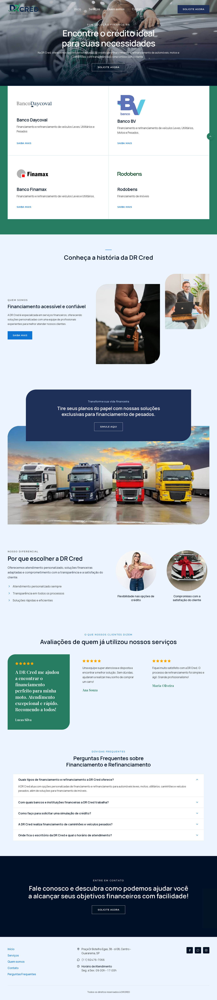

Sistema de Investigação de Marca e Identidade Online
https://drcred.com.br/
Prioridade: MEDIUM · Cenário: B_AMBIGUOUS_COMMUNICATION · Revisão humana: PENDING
O estabelecimento atua no segmento de promotora de crédito e intermediação de financiamentos veiculares (dentro do escopo COBAN). Apresenta identidade comercial própria predominante (DR Cred) e inclui o Banco BV em seção legítima de parceiros comerciais multimarcas/multibancos. Contudo, enquadra-se como B_AMBIGUOUS_COMMUNICATION (REVIEW_REQUIRED, priority MEDIUM) devido à omissão do CNPJ/razão social formal e à ausência da declaração regulatória obrigatória de correspondente bancário e canais de ouvidoria conforme a Resolução CMN nº 4.935/2021. [Revisor: CONFIRM] A DR Cred opera como promotora de crédito e financiamento veicular (entidade no escopo de apuração de COBANs). A marca Banco BV é exibida em seção de parceiros ao lado de outras instituições financeiras (Daycoval, Finamax, Rodobens), sem overbranding abusivo da marca bancária. No entanto, o site omite a razão social completa, o CNPJ, a declaração expressa e inequívoca de correspondente bancário nos termos da Resolução CMN nº 4.935/2021 e a indicação dos canais de ouvidoria da instituição parceira. Mantém-se REVIEW_REQUIRED com prioridade MEDIUM por conformidade regulatória ambígua.


| Ref | Tipo | Local | Conteúdo |
|---|---|---|---|
| E-URL | domain | url | URL final: https://drcred.com.br/ (domínio: drcred.com.br) |
| E-DISC-001 | text | search_index | Índice de busca (grounding): drcred.com.br — **URL:** `https://drcred.com.br` | **Produtos com a marca BV:** Financiamento e Refinanciamento de veículos leves, utilitários, motos e pesados | **Como utiliza a marca e elementos visuais:** Exibe em destaque na página inicial a chancela e o logotipo do Banco BV ao lado de concorrentes (Daycoval e Finamax), com chamada direta *"SOLICITE AGORA"* e canal para solicitação de simulação | Identifica-se comercialmente apenas como "DR Cred Promotora de Crédito" | Não apresenta em evidência a razão social completa, o CNPJ da promotora nem a declaração expressa de correspondente bancário nos termos da Resolução CMN nº 4.935/2021 |
| E-SHOT-VIEWPORT | screenshot | viewport | evidence/Cf9ec6ab862/attempt-1/viewport.png (sha256 d5ad8f490f197c4d…) |
| E-SHOT-FULL | screenshot | page | evidence/Cf9ec6ab862/attempt-1/fullpage.png (sha256 c47714d0a7cf523a…) |
| E-TITLE | title | head | DR Cred – Promotora de Crédito |
| E-META-1 | meta | head | description: Na DR Cred, oferecemos opções personalizadas de crédito para financiamento e refinanciamento de automóveis, motos, caminhões e imóveis com transparência e compromisso. |
| E-META-2 | meta | head | og:site_name: DR Cred |
| E-META-3 | meta | head | og:title: DR Cred – Promotora de Crédito |
| E-META-4 | meta | head | og:description: Na DR Cred, oferecemos opções personalizadas de crédito para financiamento e refinanciamento de automóveis, motos, caminhões e imóveis com transparência e compromisso. |
| E-CANONICAL | meta | head | https://drcred.com.br/ |
| E-HEAD-1 | heading | page | Encontre o crédito ideal para suas necessidades |
| E-HEAD-2 | heading | page | Nossos Parceiros e Soluções de Crédito |
| E-HEAD-3 | heading | page | Banco Daycoval |
| E-HEAD-4 | heading | page | Banco BV |
| E-HEAD-5 | heading | page | Banco Finamax |
| E-HEAD-6 | heading | page | Rodobens |
| E-HEAD-7 | heading | page | Conheça a história da DR Cred |
| E-HEAD-8 | heading | page | Financiamento acessível e confiável |
| E-HEAD-9 | heading | page | Tire seus planos do papel com nossas soluções exclusivas para financiamento de pesados. |
| E-HEAD-10 | heading | page | Por que escolher a DR Cred |
| E-HEAD-11 | heading | page | Avaliações de quem já utilizou nossos serviços |
| E-HEAD-12 | heading | page | Perguntas Frequentes sobre Financiamento e Refinanciamento |
| E-HEAD-13 | heading | page | Quais tipos de financiamento e refinanciamento a DR Cred oferece? |
| E-HEAD-14 | heading | page | Com quais bancos e instituições financeiras a DR Cred trabalha? |
| E-HEAD-15 | heading | page | Como faço para solicitar uma simulação de crédito? |
| E-HDR | text | header | Início Serviços Quem somos Contato SOLICITE AGORA |
| E-FOLD | text | viewport (acima da dobra) | Início Serviços Quem somos Contato SOLICITE AGORA Sua solução financeira Encontre o crédito ideal para suas necessidades Na DR Cred, oferecemos opções personalizadas de crédito para financiamento e refinanciamento de automóveis, motos e caminhões, com transparência e compromisso com o cliente. SOLICITE AGORA Nossos Parceiros e Soluções de Crédito Banco Daycoval Financiamento e refinanciamento de veículos Leves, Utilitários e Pesados SAIBA MAIS Banco BV Financiamento e refinanciamento de veículos Leves, Utilitários, Motos e Pesados. SAIBA MAIS |
| E-FTR | text | footer | Início Serviços Quem somos Contato Perguntas Frequentes Praça Dr Botelho Egas, 38 - sl 08, Centro - Guararema, SP (11) 92476-7066 Horário de Atendimento Seg. a Sex. 09:00h - 17:00h Todos os direitos reservados à DRCRED |
| E-NAV | nav | header | DR Cred Promotora de Crédito - Página inicial <https://drcred.com.br/> | Início <https://drcred.com.br/> | Serviços <https://drcred.com.br/#servicos> | Quem somos <https://drcred.com.br/quem-somos> | Contato <https://drcred.com.br/#contato> | SOLICITE AGORA <https://wa.me/5511924767066?text=Acessei%20o%20seu%20site%20e%20gostaria%20de%20solicitar%20uma%20simula%C3%A7%C3%A3o> |
| E-CTA-1 | cta | page | Quais tipos de financiamento e refinanciamento a DR Cred oferece? |
| E-CTA-2 | cta | page | Com quais bancos e instituições financeiras a DR Cred trabalha? |
| E-CTA-3 | cta | page | Como faço para solicitar uma simulação de crédito? |
| E-CTA-4 | cta | page | A DR Cred realiza financiamento de caminhões e veículos pesados? |
| E-CTA-5 | cta | page | Onde fica o escritório da DR Cred e qual o horário de atendimento? |
| E-CTA-6 | cta | page | Voltar ao topo |
| E-CONTACT-1 | contact | header | SOLICITE AGORA <https://wa.me/5511924767066?text=Acessei%20o%20seu%20site%20e%20gostaria%20de%20solicitar%20uma%20simula%C3%A7%C3%A3o> |
| E-CONTACT-2 | contact | page | SOLICITE AGORA <https://wa.me/5511924767066?text=Acessei%20o%20seu%20site%20e%20gostaria%20de%20solicitar%20uma%20simula%C3%A7%C3%A3o> |
| E-CONTACT-3 | contact | page | SAIBA MAIS <https://wa.me/5511924767066?text=Acessei%20o%20seu%20site%20e%20gostaria%20de%20uma%20simula%C3%A7%C3%A3o%20no%20Banco%20Daycoval> |
| E-CONTACT-4 | contact | page | SAIBA MAIS <https://wa.me/5511924767066?text=Acessei%20o%20seu%20site%20e%20gostaria%20de%20uma%20simula%C3%A7%C3%A3o%20no%20Banco%20BV> |
| E-CONTACT-5 | contact | page | SAIBA MAIS <https://wa.me/5511924767066?text=Acessei%20o%20seu%20site%20e%20gostaria%20de%20uma%20simula%C3%A7%C3%A3o%20no%20Banco%20Finamax> |
| E-CONTACT-6 | contact | page | SAIBA MAIS <https://wa.me/5511924767066?text=Acessei%20o%20seu%20site%20e%20gostaria%20de%20uma%20simula%C3%A7%C3%A3o%20no%20Banco%20Rodobens> |
| E-CONTACT-7 | contact | page | SAIBA MAIS <https://wa.me/5511924767066?text=Acessei%20o%20seu%20site%20e%20gostaria%20de%20saber%20mais%20sobre%20a%20empresa> |
| E-CONTACT-8 | contact | page | SIMULE AQUI <https://wa.me/5511924767066?text=Acessei%20o%20seu%20site%20e%20gostaria%20de%20solicitar%20uma%20simula%C3%A7%C3%A3o%20de%20pesados> |
| E-CONTACT-9 | contact | page | SOLICITE AGORA <https://wa.me/5511924767066?text=Acessei%20o%20seu%20site%20e%20gostaria%20de%20solicitar%20uma%20simula%C3%A7%C3%A3o> |
| E-CONTACT-10 | contact | footer | (11) 92476-7066 <https://wa.me/5511924767066?text=Acessei%20o%20seu%20site%20e%20gostaria%20de%20saber%20mais%20sobre%20a%20DRCred> |
| E-CONTACT-11 | contact | footer | Facebook da DR Cred <https://facebook.com/promotoradrcred> |
| E-CONTACT-12 | contact | footer | WhatsApp da DR Cred <https://wa.me/5511924767066?text=Acessei%20o%20seu%20site%20e%20gostaria%20de%20saber%20mais%20sobre%20a%20DRCred> |
| E-CONTACT-13 | contact | footer | Instagram da DR Cred <https://instagram.com/promotoradrcred/> |
| E-IMG-1 | image | header (acima da dobra) | imagem alt='DR Cred Promotora de Crédito' src=https://drcred.com.br/images/logotipo-drcred.png (201x76, acima da dobra) |
| E-IMG-2 | image | page (acima da dobra) | imagem alt='Logotipo Banco Daycoval' src=https://drcred.com.br/images/logo-daycoval.png (220x34, acima da dobra) |
| E-IMG-3 | image | page (acima da dobra) | imagem alt='Logotipo Banco BV' src=https://drcred.com.br/images/logo-banco-bv.svg (177x128, acima da dobra) |
| E-IMG-4 | image | page | imagem alt='Logotipo Banco Finamax' src=https://drcred.com.br/images/logo-finamax.png (200x58, abaixo da dobra) |
| E-IMG-5 | image | page | imagem alt='Logotipo Rodobens' src=https://drcred.com.br/images/logo-rodobens.svg (154x24, abaixo da dobra) |
| E-TXT-001 | text | page | Nossos Parceiros e Soluções de Crédito |
| E-TXT-002 | text | page | Banco Daycoval |
| E-TXT-003 | text | page | Banco BV |
| E-TXT-004 | text | page | Banco Finamax |
| E-TXT-005 | text | page | Oferecemos atendimento personalizado, soluções financeiras adaptadas e comprometimento com a transparência e a satisfação do cliente. |
| E-TXT-006 | text | page | Atendimento personalizado sempre |
| E-TXT-007 | text | page | A DR Cred me ajudou a encontrar o financiamento perfeito para minha moto. Atendimento excepcional e rápido. Recomendo a todos! |
| E-TXT-008 | text | page | Com quais bancos e instituições financeiras a DR Cred trabalha? |
| E-TXT-009 | text | page | Onde fica o escritório da DR Cred e qual o horário de atendimento? |
| E-TXT-010 | text | page | Horário de Atendimento |
| Dimensão | Sinal | Achado | Refs |
|---|---|---|---|
| VISUAL_IDENTITY | LEGITIMATE | O portal possui identidade visual própria e independente (DR Cred), com paleta de cores verde e azul-marinho, logotipo próprio e fotos ilustrativas que não imitam os portais oficiais do Banco BV. | E-SHOT-VIEWPORT E-SHOT-FULL E-IMG-1 |
| DECLARED_COMMERCIAL_IDENTITY | CONFUSION | Identifica-se como DR Cred Promotora de Crédito, mas não divulga CNPJ nem razão social societária formal. | E-TITLE E-FTR E-DISC-001 |
| CORRESPONDENT_TRANSPARENCY | CONFUSION | Ausência de explicitação do papel de correspondente bancário conforme exigido pela Resolução CMN nº 4.935/2021, sem dados de ouvidoria do Banco BV. | E-FOLD E-FTR E-DISC-001 |
| INSTITUTIONAL_LANGUAGE | NEUTRAL | Comunicação redigida em terceira pessoa ou em nome da própria promotora ('Nossos Parceiros e Soluções de Crédito', 'Por que escolher a DR Cred'), sem se passar pela instituição bancária. | E-HEAD-2 E-HEAD-10 E-TXT-005 |
| LOGO_USAGE | NEUTRAL | Exibição do logotipo contemporâneo do Banco BV em card de parceiros comerciais, em paridade de proporção e hierarquia visual com outras instituições (Daycoval, Finamax, Rodobens). | E-IMG-2 E-IMG-3 E-IMG-4 E-IMG-5 E-SHOT-VIEWPORT |
| SERVICE_JOURNEY | NEUTRAL | Jornada de captação de leads via botão que encaminha mensagem pré-formatada para o WhatsApp da DR Cred solicitando simulação junto ao Banco BV. | E-CONTACT-4 E-NAV |
| CONTACT_CHANNELS | LEGITIMATE | Canais de contato próprios e explícitos da promotora DR Cred (WhatsApp com DDD 11, redes sociais da empresa e endereço físico em Guararema/SP). | E-FTR E-CONTACT-10 E-CONTACT-11 E-CONTACT-12 E-CONTACT-13 |
| CONSUMER_CONFUSION | CONFUSION | Embora fique claro que se trata de uma promotora intermediária, a falta de dados societários (CNPJ) e de esclarecimento formal sobre a relação jurídica de correspondente gera ambiguidade regulatória. | E-DISC-001 E-FOLD |
O estabelecimento atua no segmento de promotora de crédito e intermediação de financiamentos veiculares (dentro do escopo COBAN). Apresenta identidade comercial própria predominante (DR Cred) e inclui o Banco BV em seção legítima de parceiros comerciais multimarcas/multibancos. Contudo, enquadra-se como B_AMBIGUOUS_COMMUNICATION (REVIEW_REQUIRED, priority MEDIUM) devido à omissão do CNPJ/razão social formal e à ausência da declaração regulatória obrigatória de correspondente bancário e canais de ouvidoria conforme a Resolução CMN nº 4.935/2021.
Nenhum CNPJ ou razão social identificáveis no conteúdo coletado.
| Tipo | Valor | Ref | Contexto |
|---|---|---|---|
| domain | drcred.com.br | E-URL | |
| social_profile | https://facebook.com/promotoradrcred | E-CONTACT-11 | |
| social_profile | https://instagram.com/promotoradrcred/ | E-CONTACT-13 | |
| trade_name | DR Cred | E-META-2 | |
| phone | (11) 92476-7066 | E-FTR | |
| SOLICITE AGORA <https://wa.me/5511924767066?text=Acessei%20o%20seu%20site%20e%20gostaria%20de%20solicitar%20uma%20simula%C3%A7%C3%A3o> | E-CONTACT-1 | ||
| SAIBA MAIS <https://wa.me/5511924767066?text=Acessei%20o%20seu%20site%20e%20gostaria%20de%20uma%20simula%C3%A7%C3%A3o%20no%20Banco%20Daycoval> | E-CONTACT-3 | ||
| SAIBA MAIS <https://wa.me/5511924767066?text=Acessei%20o%20seu%20site%20e%20gostaria%20de%20uma%20simula%C3%A7%C3%A3o%20no%20Banco%20BV> | E-CONTACT-4 | ||
| SAIBA MAIS <https://wa.me/5511924767066?text=Acessei%20o%20seu%20site%20e%20gostaria%20de%20uma%20simula%C3%A7%C3%A3o%20no%20Banco%20Finamax> | E-CONTACT-5 | ||
| partnership_declaration | Parceiros | E-FOLD | SOLICITE AGORA Nossos Parceiros e Soluções de Crédito Banco Daycoval Financiamento e refinanciamento de veículos Leves, Utilitários e Pesados SAIBA MAIS Banco BV Financiamento e refinanciamento de veí |
Mapeamento indicativo para apoio à auditoria. Não constitui conclusão regulatória; a decisão definitiva pertence à auditoria.
Fonte: NORMATIVE
Art. 14. O contrato de correspondente deve estabelecer: [...] II - vedação à utilização, pelo contratado, de logomarca ou de outros atributos que sejam similares aos adotados pela instituição contratante em suas agências, postos de atendimento, sítio eletrônico na internet, aplicativo ou outras plataformas de comunicação em rede;
Evidência observada: E-IMG-1 E-SHOT-FULL E-SHOT-VIEWPORT
Fonte: NORMATIVE
Art. 14. O contrato de correspondente deve estabelecer: [...] III - divulgação ao público, pelo contratado, de sua condição de prestador de serviços à instituição contratante, identificada pelo nome com que é conhecida no mercado, com descrição dos produtos e serviços oferecidos e canais de contato da instituição contratante, inclusive de sua ouvidoria, em local visível, em destaque e em formato legível, por meio de: a) sítio eletrônico do correspondente na internet, acessível na página inicial; b) aplicativo e outras plataformas de comunicação em rede do correspondente; [...]
Hipótese: Divulgação ao público da condição de prestador de serviços/parceria ausente, insuficiente, ambígua ou sem destaque. A norma disciplina correspondentes contratados; o responsável não foi identificado como correspondente.
Evidência observada: E-DISC-001 E-FOLD E-FTR E-TITLE
Informação faltante:
Fonte: NORMATIVE
Art. 3º O correspondente atua por conta e sob as diretrizes da instituição contratante, que assume inteira responsabilidade pelo atendimento prestado aos clientes e usuários por meio do contratado.
Evidência observada: E-CONTACT-10 E-CONTACT-11 E-CONTACT-12 E-CONTACT-13 E-FTR
Se o responsável não for correspondente contratado, os indícios podem caracterizar uso indevido de marca ou fraude, fora do escopo da Res. 4.935: avaliar encaminhamento às áreas jurídica/segurança.
Limitações: requisitos contratuais/internos não fornecidos: mapeamento limitado ao texto normativo
Decisão: CONFIRM → REVIEW_REQUIRED / MEDIUM
A DR Cred opera como promotora de crédito e financiamento veicular (entidade no escopo de apuração de COBANs). A marca Banco BV é exibida em seção de parceiros ao lado de outras instituições financeiras (Daycoval, Finamax, Rodobens), sem overbranding abusivo da marca bancária. No entanto, o site omite a razão social completa, o CNPJ, a declaração expressa e inequívoca de correspondente bancário nos termos da Resolução CMN nº 4.935/2021 e a indicação dos canais de ouvidoria da instituição parceira. Mantém-se REVIEW_REQUIRED com prioridade MEDIUM por conformidade regulatória ambígua.
| Tema | Severidade | Questionamento | Refs |
|---|---|---|---|
| domain_attribution | MEDIUM | Responsável pela página não identificado; a conclusão sobre a marca não pode ser atribuída a um estabelecimento específico. | E-URL |
| Fonte | Consulta / hipótese | URL original | Título / trecho |
|---|---|---|---|
| grounding | Objetivo: Promotoras, correspondentes e corretoras oferecendo refinanciamento, crédito consignado, empréstimo pessoal e garantia com a marca.
Execute no Google Search as seguintes consultas (dorks):
- "Banco BV" ("crédito com garantia" OR "home equity" OR refinanciamento) (correspondente OR promotora OR financeira) -site:bv.com.br -site:bancobv.com.br -site:bvfinanceira.com.br -site:bvinvestimentos.com.br -site:napista.com.br -site:bvopen.com.br -site:meufinanciamentosolar.com.br -site:votorantim.com.br -site:vam.com.br -site:reclameaqui.com.br -site:jusbrasil.com.br -site:jus.br
- ("bv financeira" OR "Banco BV") ("crédito consignado" OR "empréstimo consignado" OR consignado) (promotora OR correspondente OR "taxas" OR simulação) -site:bv.com.br -site:bancobv.com.br -site:bvfinanceira.com.br -site:bvinvestimentos.com.br -site:napista.com.br -site:bvopen.com.br -site:meufinanciamentosolar.com.br -site:votorantim.com.br -site:vam.com.br -site:reclameaqui.com.br -site:jusbrasil.com.br -site:jus.br
- ("BV Financeira" OR "Banco BV") ("Daycoval" OR "Pan" OR "Safra" OR "BMG") (consignado OR refinanciamento OR empréstimo OR promotora) -site:bv.com.br -site:bancobv.com.br -site:bvfinanceira.com.br -site:bvinvestimentos.com.br -site:napista.com.br -site:bvopen.com.br -site:meufinanciamentosolar.com.br -site:votorantim.com.br -site:vam.com.br -site:reclameaqui.com.br -site:jusbrasil.com.br -site:jus.br
Liste de forma abrangente as páginas públicas encontradas (até 12 resultados distintos), informando para cada uma o nome do estabelecimento/perfil, a URL e como a marca é utilizada (destaque visual, título, feirão, simulador, redes sociais e se há ou não identificação clara de CNPJ e condição de correspondente bancário). H2-product:refinanciamento e crédito com garantia | https://drcred.com.br/ | drcred.com.br **URL:** `https://drcred.com.br` | **Produtos com a marca BV:** Financiamento e Refinanciamento de veículos leves, utilitários, motos e pesados | **Como utiliza a marca e elementos visuais:** Exibe em destaque na página inicial a chancela e o logotipo do Banco BV ao lado de concorrentes (Daycoval e Finamax), com chamada direta *"SOLICITE AGORA"* e canal para solicitação de simulação | Identifica-se comercialmente apenas como "DR Cred Promotora de Crédito" | Não apresenta em evidência a razão social completa, o CNPJ da promotora nem a declaração expressa de correspondente bancário nos termos da Resolução CMN nº 4.935/2021 |
Original: https://drcred.com.br/
Final: https://drcred.com.br/
| Artefato | Caminho | SHA-256 | Bytes |
|---|---|---|---|
| screenshot_viewport | evidence/Cf9ec6ab862/attempt-1/viewport.png | d5ad8f490f197c4d060362affbe239c81a7ff76606eed3e5fd2b99e8599b89aa | 933290 |
| screenshot_full | evidence/Cf9ec6ab862/attempt-1/fullpage.png | c47714d0a7cf523a934195ae0af8b0df398b00519015e54718189d43055e7f6b | 2328790 |
| html | evidence/Cf9ec6ab862/attempt-1/page.html.txt | 2ef268cb35bd4a3004d8c560d17ac1cae82730f164fb5b0de39139c544615196 | 106371 |
| text | evidence/Cf9ec6ab862/attempt-1/text.txt | 21f9f7c604ce576e083c34aae4f5bb671d01ff3398db44ebc7e01ce22b528308 | 2970 |
| page_data | evidence/Cf9ec6ab862/attempt-1/page.json | eb68d873254d0d6a2b9aa5d62cb683cf3de44b267dd9a12968a0c9cf71c6bbaa | 17378 |
| Quando | De | Para | Nota |
|---|---|---|---|
| 2026-11-25T18:12:09+00:00 | DISCOVERED | QUEUED | prioritised (score 1.5) |
| 2026-11-25T19:18:58+00:00 | QUEUED | COLLECTING | |
| 2026-11-25T19:19:05+00:00 | COLLECTING | COLLECTED | |
| 2026-11-25T19:19:05+00:00 | COLLECTED | ANALYZING | |
| 2026-11-25T19:20:04+00:00 | ANALYZING | REVIEWING | |
| 2026-11-25T19:20:15+00:00 | REVIEWING | COMPLETED |